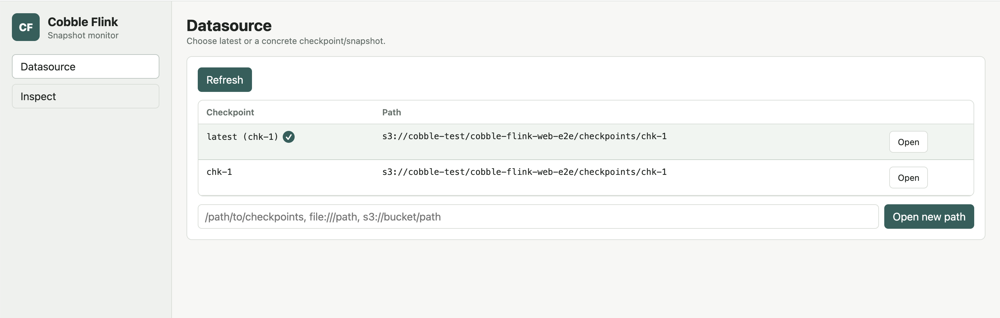

Web Monitor
Use the Cobble Flink web monitor to inspect Cobble data from a browser. It can open Flink checkpoint paths written by the Cobble state backend, and it can also open normal Cobble datasource paths such as sink output.
The monitor is read-only. It runs as a small Java process, serves the UI and API from the same port, and does not require a Flink job to read the selected snapshot.
When To Use It
The web monitor is useful when you want to:
- check which checkpoints or Cobble snapshots are available
- follow
latestwhile a job is still producing checkpoints - keep a small set of rows tracked while newer snapshots appear
- inspect Cobble state by state name, verify decoded state keys, MapState keys, ListState values, and timer entries
- inspect Cobble sink rows, primary keys, and value columns
For production reads, use the Cobble source connector or your own application code. The monitor is meant for debugging, validation, and ad-hoc inspection.
Build
Build the monitor from the repository:
./mvnw -pl cobble-flink-monitor -am package -DskipTests
The runnable jar is written under cobble-flink-monitor/target/.
Start The Monitor
Start without an initial datasource:
java -jar cobble-flink-monitor/target/cobble-flink-monitor-*.jar
Then open the UI and use the Datasource page to enter a checkpoint root, concrete chk-* directory, or Cobble datasource path.
You can also pass an initial path:
java -jar cobble-flink-monitor/target/cobble-flink-monitor-*.jar \
--checkpoint file:///path/to/checkpoints-or-cobble-table
For Flink checkpoints, both of these are valid:
java -jar cobble-flink-monitor/target/cobble-flink-monitor-*.jar \
--checkpoint s3:///path/to/checkpoints
java -jar cobble-flink-monitor/target/cobble-flink-monitor-*.jar \
--checkpoint s3:///path/to/checkpoints/chk-42
Useful options:
--bind 127.0.0.1
--port 8088
--checkpoint file:///path/to/checkpoints-or-cobble-table
--flink-conf /path/to/flink/conf
--total-buckets 32768
--inspect-default-limit 100
--inspect-max-limit 1000
Remote Filesystems
Pass --flink-conf when the datasource is on a filesystem configured through Flink:
java -jar cobble-flink-monitor/target/cobble-flink-monitor-*.jar \
--flink-conf "$FLINK_HOME/conf" \
--checkpoint s3://bucket/path/to/checkpoints
The monitor initializes Flink filesystems before it scans the datasource and passes the relevant storage configuration to Cobble readers. Use this for S3, OSS, Azure, GCS, HDFS, and compatible filesystems.
Datasource Page
The Datasource page shows the snapshots available under the current path.
For a Flink checkpoint root, the monitor scans chk-* directories, discovers Cobble operators, and lets you choose:
latest, which follows the newest readable checkpoint- a concrete checkpoint
- an operator, shown on the
Inspectpage for checkpoint datasources
For a normal Cobble datasource, the monitor scans snapshot/SNAPSHOT-* and lets you choose:
latest, which follows the newest Cobble snapshot- a concrete snapshot
Use Refresh to rescan the path. If old checkpoints have been removed, they are removed from the list on refresh.

Inspect Datasources
After selecting a datasource, open Inspect and choose the matching guide:
- State Inspect: inspect schema-aware ValueState, ListState, MapState, and timer state from a Flink checkpoint.
- Sink Inspect: inspect a Cobble sink snapshot by primary key and typed value columns.
Both pages use Scan to browse rows and Track to keep selected rows visible while a snapshot changes. The monitor never writes to the datasource.
API
The monitor exposes these endpoints:
GET /healthzGET /api/v1/metaGET /api/v1/snapshotsPOST /api/v1/modeGET /api/v1/inspect
Use the UI for normal inspection. The API is mainly useful for automation or for debugging the monitor itself.
Notes
- The monitor never writes to the selected datasource.
latestis resolved from the current datasource list and can be refreshed.- Checkpoint datasources support operator discovery.
- Schema-aware inspection depends on metadata written with the checkpoint or sink snapshot. Older or raw datasources still fall back to bytes.